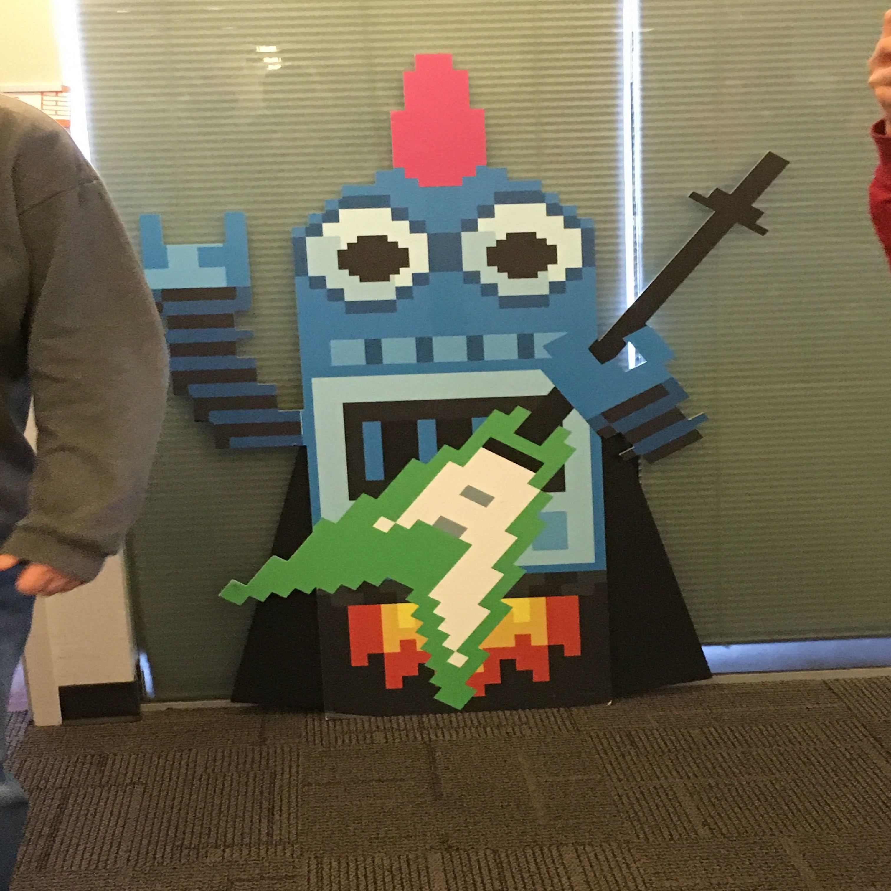
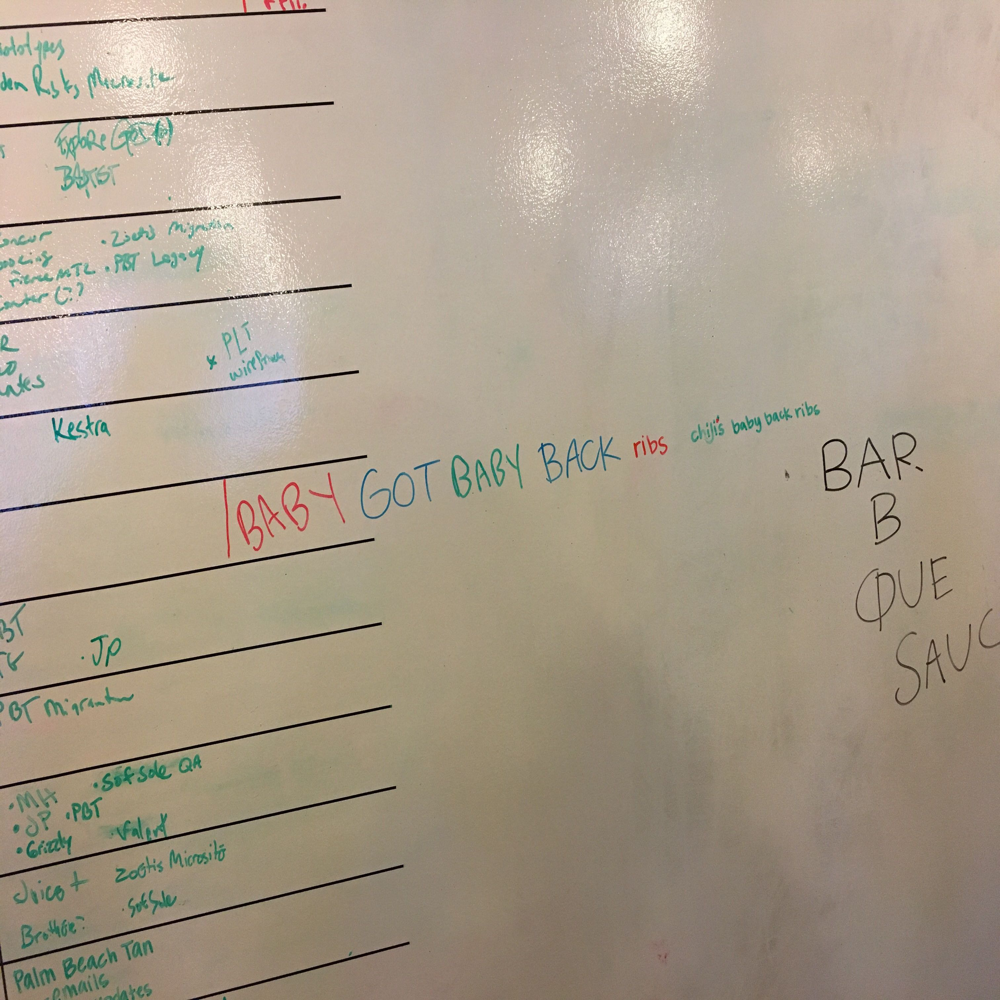
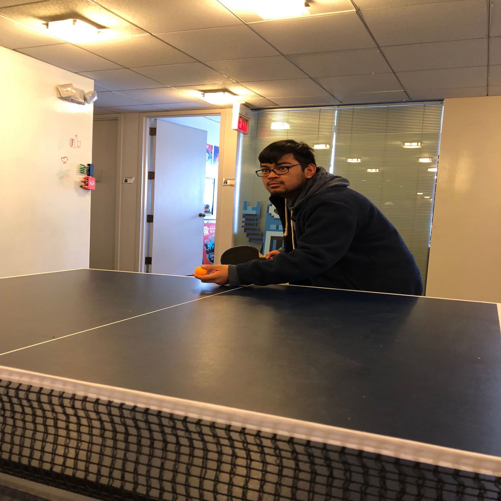
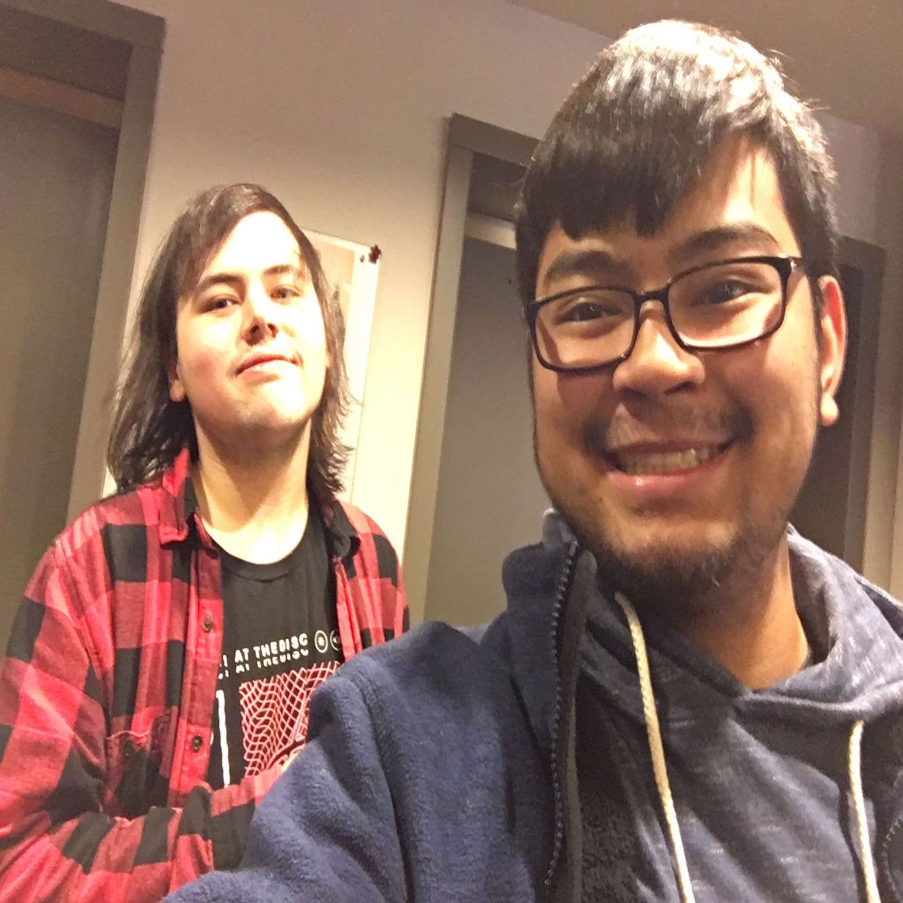

My name’s Tony the Robot and I’ve been created to sever humans and make sure they’ll be great and such. I liked this little sprite and it was very cute. I hope it’s used for a site or something.

The image of the board made me laugh. It was a real big funny and honestly it’s the type of environment I’m looking for in a company. It’s kind of idolized in my mind to work at a company like Rooster Teeth but that’s dream and environment to me is key.

Here we see the wild Ping Pong Veteran in his natural habitat, waiting to serve and win the finals of the Ping Pong World Championship. Honestly, I found the fact that they have a Ping Pong table funny in may respects and rights and it was fun to hear that they use the table during breaks. I hope I get a company like that or so.

The look in our eyes says it all. It was a very draining experience to listen to him and learn. It was like a college lecture but the brightness in our eyes says we were happy to be there or at least, I was. Griffin, on the other hand, looked dead inside per usual.
My Experience
The trip to Archer Malmo was a very quiet one. It was a very tranquil trip that lead us to a very informative place. To say the least, as much as it was informative, it was kinda bland. The technical works that went into the process of being a web designer or working in the field wasn’t as glamorous as I wanted it to be. I knew for a fact that it wasn’t going to be the best sorta experience but regardless it was nice to know what I would be getting into. Most of the things we learned were common knowledge but the experience that was there was unknown territory to me. Looking at it, most of the job is spent looking at a screen and figuring out which is the best way to deal with a problem and trying to solve it. There are the customer’s stuff and it was very informative experience to say the least.